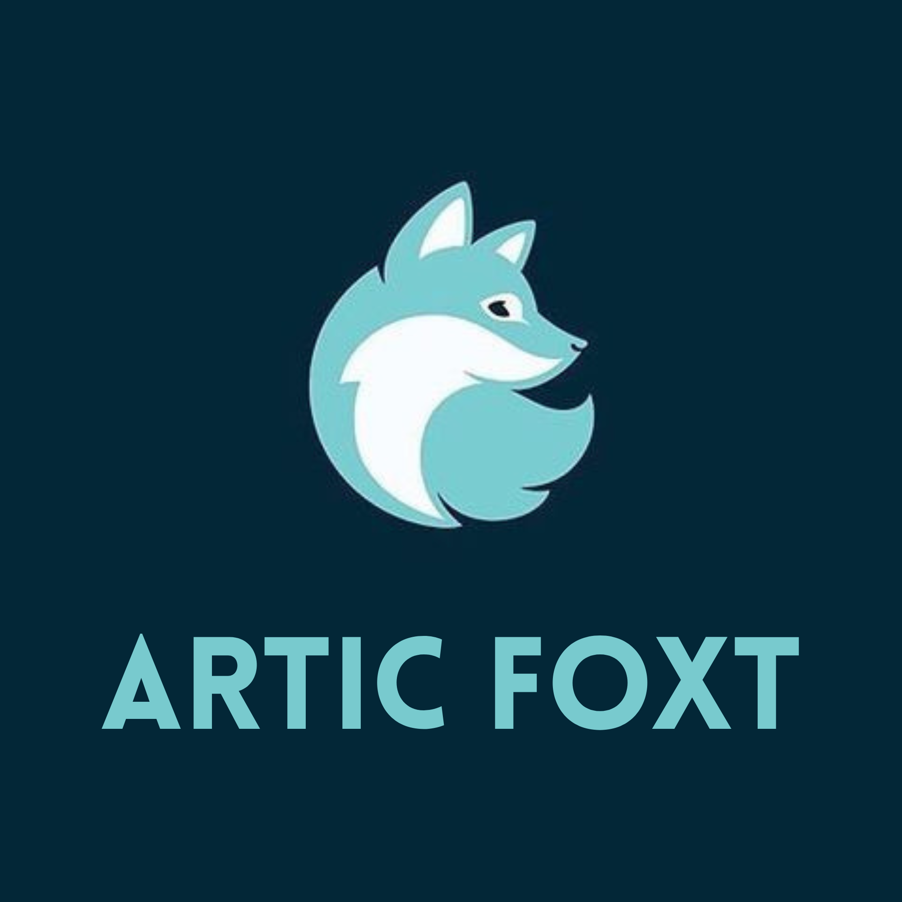
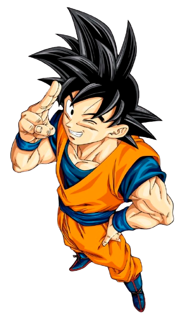
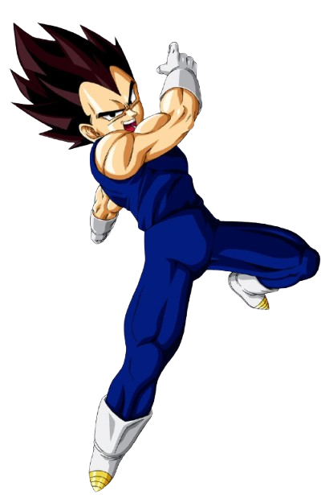

Hola, soy Mateo. Transformo ideas en interfaces modernas, animaciones fluidas y soluciones técnicas que escalan. Bienvenido a ArticFoxt.

Sitios rápidos y responsivos hechos a medida.
Interfaces que cobran vida con efectos fluidos.
Mantenimiento y optimización de sistemas.

